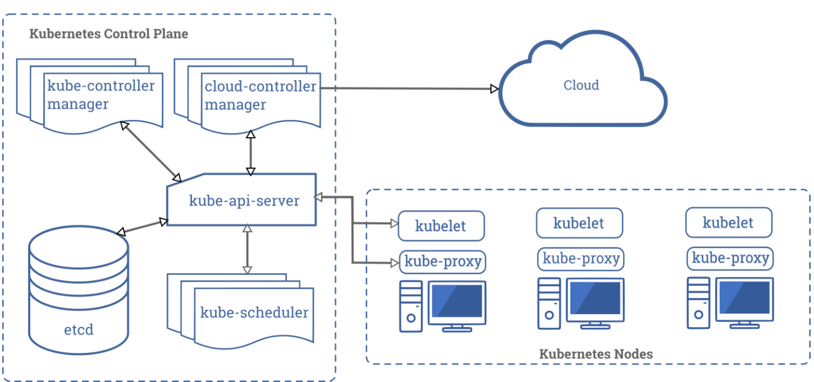
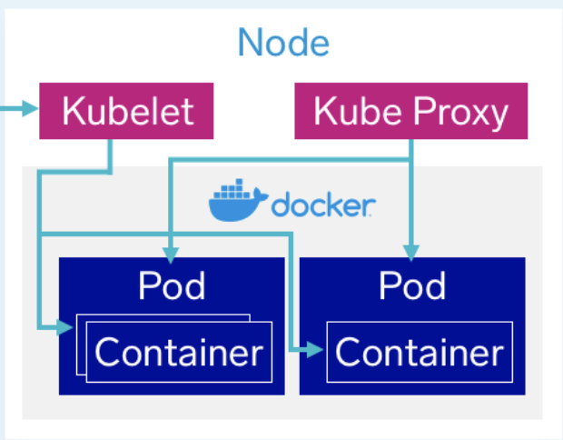

Kubernetes is a container orchestratino system that automates the deployment, scheduling and scaling of containerized applications.

- The Control Plane’s components make global decisions about the cluster
- kube-apiserver is the main implementation of a Kubernetes API server which acts as the front end for users to interact with the Kubernetes control plane.
- etcd is used to store key-value information about all nodes in the cluster.
- kube-scheduler watches for newly created pods with no assigned node, and selects a node for them to run on based on a variety of factors.
- kube-controller-manager runs a control loop that watches the shared state of the cluster through the apiserver and makes changes attempting to move the current state towards the desired state.
- cloud-controller-manager runs controllers that interact with the underlying cloud providers. Since cloud providers develop and release at a different pace compared to the Kubernetes project, the cloud-controller-manager allows the cloud vendor’s code and the Kubernetes code to evolve independently.

- Node- an instance of a computer that runs pods. Each node had Kubelet, which takes a set of PodSpecs that are provided through various mechanisms and ensures that the containers described in those PodSpecs are running and healthy. Kube-proxy maintains network rules on nodes. These network rules allow network communication to your Pods from network sessions inside or outside of your cluster.
- Pod- a set of running containers on your cluster